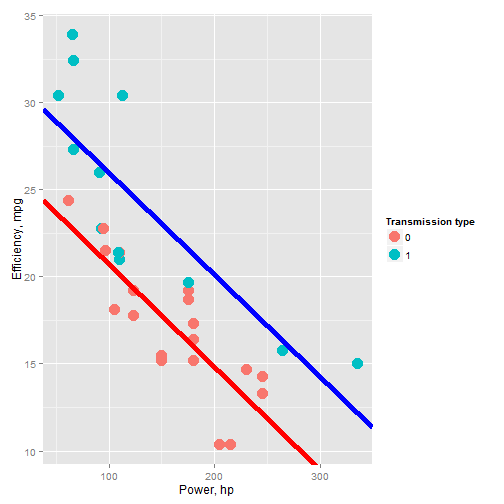

- Car efficiency prediction is important for several groups of people:
- 1) Self-employed (pizza delivery, newspaper delivery, babysitters, tutors etc.)
- 2) Frequent travelers (salespersons, advertisers)
- 3) Small businesses (fast-food, pet grooming, carpet/house cleaning, yard/lawn management, etc.)
- Costs of fuel are important in planning and managing business, may constitute significant portion of costs
- How efficient is the car you or your business use? Can we predict it based on its power?
- Does efficiency depend on the transmission type of your vehicle?
- We present new algorithm allowing one to predict the car fuel consumption efficiency (measured in miles per gallon of fuel) if the car power and its transmission type are given.
Car efficiency prediction
Kirill Zhuravlev
Engineer
Importance of the problem
Data used to build the prediction model
 Data was taken from 1974 Motor Trend US magazine. We used simple linear regression model to predict the efficiency of a vehicle based on its power, measured in horsepowers.
Data was taken from 1974 Motor Trend US magazine. We used simple linear regression model to predict the efficiency of a vehicle based on its power, measured in horsepowers.
Data with the linear regression models
 Blue and red lines are best linear fits for cars with manual and automatic transmission, respectively.
Web application done using shiny
Below is a screenshot of our web application <!--html_preserve-->
Car efficiency calculator
Your car efficiency is
mpg
## Error in shinyAppDir(x): App dir must contain either app.R or server.R.